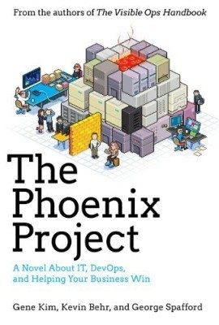

"The Phoenix Project: A Novel About IT, DevOps, and Helping Your Business Win"
- Read on 2017-08-09
- Rating: ️️️️️
- Format: 🎧 (14 hours 46 minutes)
Meh. If you've read Eliyahu M. Goldratt's "The Goal", and have a modicum of creativity, this feels like a rinse-and-repeat of that book. The one aspect that made me raise my eyebrows was once the characters got into 5-10 pushes to production per day. That helped gain an additional star for this book.
- Prior: The Girl Who Drank the Moon
- Next: A Gentleman in Moscow